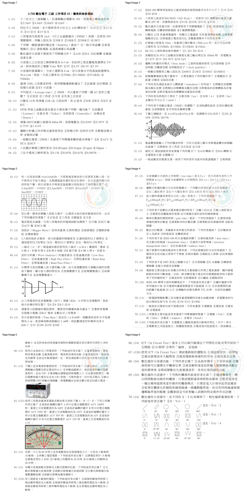
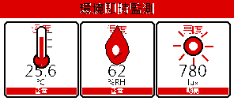
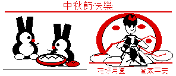

多感測輸入
DHT11 讀取溫度與濕度，光敏電阻提供 0～1000 的相對亮度值。
OPEN HARDWARE · ESP32 · MQTT
一個可實作、可擴充的 ESP32 環境感測專案：讀取溫度、濕度與相對亮度，透過 MQTT 傳送到網路，再以低耗電的三色電子紙呈現即時狀態。
WHY THIS PROJECT
從感測器、微控制器、無線網路到視覺化輸出，每一層都保持簡單、透明，適合學習、展示與後續改造。
DHT11 讀取溫度與濕度，光敏電阻提供 0～1000 的相對亮度值。
Waveshare 2.9 吋黑白紅三色電子紙，讓資訊在斷電後仍能保留。
週期發布資料，也能用 ON、OFF、TOGGLE 指令控制外部燈號或繼電器。
BUILD LOG
專案附有硬體接線圖、電子紙畫面預覽與 Arduino 程式，可直接從 GitHub 下載並在自己的 ESP32 上重現。



DATA PIPELINE
ESP32 每 60 秒發布感測值，同時訂閱燈號控制主題。你可以把它接到 Node-RED、Home Assistant 或任何 MQTT client。
esp32/epaper/temperature溫度 °Cesp32/epaper/humidity相對濕度esp32/epaper/lux相對亮度esp32/epaper/light/setON / OFF / TOGGLEesp32/epaper/statusONLINE / OFFLINEQUICK START
連接 ESP32、2.9 吋 B V4 電子紙、DHT11、光敏電阻與輸出燈號。
安裝 ESP32 Arduino Core 與 GxEPD2，填入本機 Wi-Fi 與 MQTT 設定。
開啟 40_epaper_mqtt.ino，上傳後用 MQTT client 觀察資料。
READY TO BUILD?